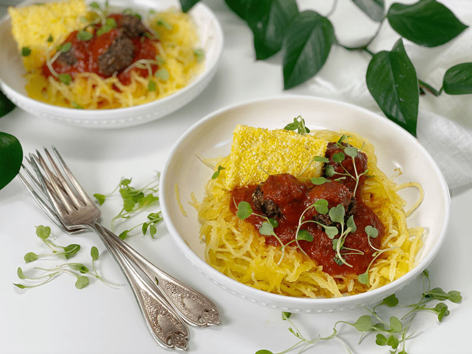

Spaghetti Squash Spaghetti with Vegan Meatballs | Cooked Plates of Inspiration
Today’s Plate of Inspiration consists of Baked Spaghetti Squash noodles, seasoned tomato sauce, Vegan Mushroom Meatballs with a side of Baked Polenta Flatbread. I sprinkled arugula micro greens on top, which imparts an intense peppery flavor, plus they’re full of vitamins and minerals. It was a real treat getting my hands on those.

This plate of food is gluten-free, vegan, nut-free, oil-free, and soy-free. I pulled it together based on leftovers that are crowding out of my fridge. Remember, simple foods can create as much comfort for the soul as elaborate gourmet dishes. In fact, if you flip through your childhood Rolodex and pull up your favorite dishes…were they simple dishes or ones that appeared to be complicated?
For me, it was Great-Grandma’s mac ‘n’ cheese, my grandmother’s egg salad sandwich, and my mom’s potato salad. Leave a comment below on what your childhood favorites were. After you do that, open your fridge and see what inspiration tugs at you today! blessings, amie sue
© AmieSue.com